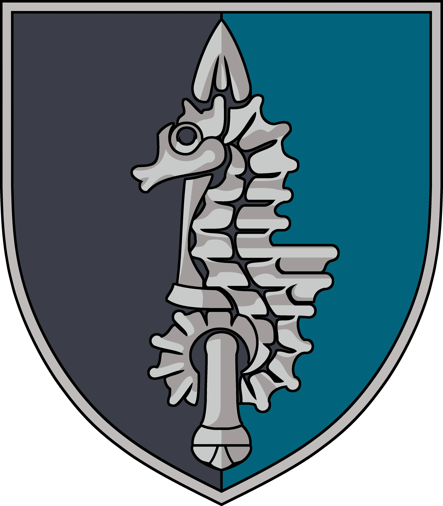

Мединський Олег
Майстер кіокушинкай карате, 2 дан.
Капітан 2 рангу (посмертно) ВМС Збройних Сил України
Народився 1968 року в с. Іллінка.
Головний тренер клубу "Майський" м. Очаків
73-й морський центр спеціальних операцій
Спогад про героя
Олег Костянтинович на позивний "Усатий" ветеран 73-го морського центру спеціальних операцій (Очаків). Після багаторічної служби у морському спецназі знаходився в запасі до 2014-го року. Коли почалися бойові дії на сході України в 2014-му році, повернувся у військо, і з 2014 року перебував у зоні проведення АТО.
За два роки війни Мединський побував практично у всіх «гарячих точках», включаючи Іловайськ.
Всі пам'ятають Олега Костянтиновича, як людину із чудовим почуттям гумору. Він був справжньою душею компанії. Всі полюбляли приїжджати в Очаків на змагання "Кубок Майського", адже там завжди панувала тепла та дружня атмосфера.